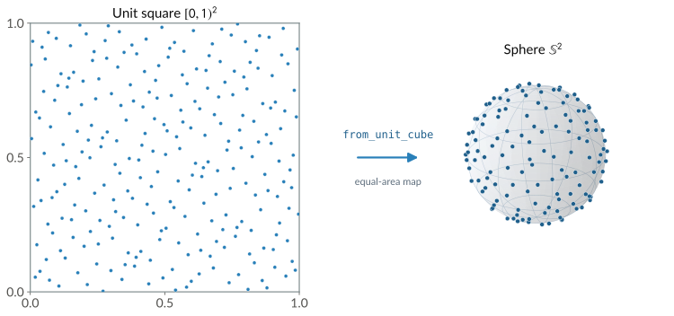
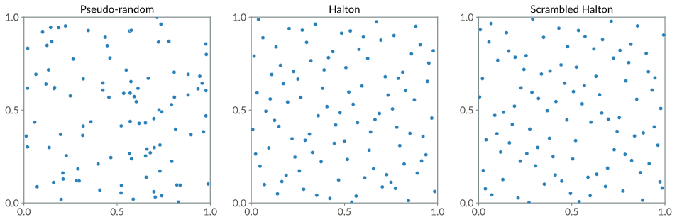

Sampling on Manifolds#
Planners and many other algorithms take random samples from a space, and their results depend on how those samples are spread. Sampling on a manifold means picking a point of the manifold from a distribution that is uniform with respect to the manifold’s own volume. Naive approaches on a curved space cluster points, for example near the poles of a sphere or along one axis of a rotation group. This page covers how geodex samples uniform points on a manifold, and how to choose the sampler and seed it.
From the unit cube to the manifold#
geodex splits sampling into two stages that meet at the unit cube. A sampler fills a
vector with uniform coordinates in \([0,1)^n\) and does not depend on the manifold. Each
manifold provides a measure-preserving map from_unit_cube that maps the cube onto the
manifold, equal volumes of the cube onto equal volumes of the manifold. A random point
is a unit-cube vector from the sampler pushed through from_unit_cube. The number of cube
coordinates a manifold uses is unit_cube_dim(). Most manifolds use as many coordinates as
their dimension (two for the 2-sphere, three for \(\mathrm{SO}(3)\) and six for
\(\mathrm{SE}(3)\)), and an \(n\)-sphere with \(n \ge 3\) uses \(n+1\).
Every manifold in geodex holds a sampler of its own, one of the same few kinds, and the map changes from one manifold to the next. The table below gives the cube dimension and the map of each built-in manifold.
Manifold |
Cube dim |
Map onto the manifold |
|---|---|---|
\(\mathbb{R}^n\) |
n |
affine rescale of each coordinate |
\(\mathbb{T}^n\) |
n |
affine rescale of each angle |
\(\mathrm{SO}(2)\) |
1 |
affine rescale of the angle |
\(\mathrm{SE}(2)\) |
3 |
affine on position and heading |
\(\mathbb{S}^2\) |
2 |
cylindrical equal-area |
\(\mathbb{S}^n,\ n \ge 3\) |
n+1 |
inverse-CDF normals, then normalize |
\(\mathrm{SO}(3)\) |
3 |
Shoemake uniform quaternion |
\(\mathrm{SE}(3)\) |
6 |
affine translation plus Shoemake |
On \(\mathbb{S}^2\), the cylindrical equal-area map takes a height coordinate and an angle coordinate to a point. Projecting a sphere onto its bounding cylinder preserves area (Archimedes’ hat-box theorem) [1]. In higher dimensions, geodex samples \(n+1\) standard normals through the inverse normal CDF and normalizes them. A normalized standard Gaussian vector is uniform on \(\mathbb{S}^n\) [2]. Rotations use Shoemake’s construction, which builds a Haar-uniform unit quaternion from three uniform coordinates [3].
A new C++ manifold implements unit_cube_dim and from_unit_cube to support sampling.
In Python, random_point, seed and the sampler= constructor argument control
sampling.


Even coverage of the unit square becomes even coverage of the sphere. The left panel is a
scrambled Halton set in \([0,1)^2\), and from_unit_cube maps it onto
\(\mathbb{S}^2\) through the cylindrical equal-area map.#
Even coverage#
Independent pseudo-random samples are uniform on average, and any finite set of them clumps in some places and leaves gaps in others. geodex samples from a low-discrepancy sequence, the Halton sequence, whose every prefix fills the space evenly. It trades statistical independence for coverage. The comparison below shows 100 points of each.


100 points in the unit square. Pseudo-random samples clump and leave gaps, while the Halton and scrambled Halton sequences spread evenly.#
The star discrepancy measures how evenly a point set covers the cube. Take a set \(P\) of \(N\) points in \([0,1)^d\), and any box \(B = [0, b_1) \times \cdots \times [0, b_d)\) anchored at the origin. For evenly spread points, the fraction of them inside \(B\) tracks the volume of \(B\). The star discrepancy is the largest gap between that fraction and that volume, over every such box,
Independent uniform samples reduce this discrepancy at the Monte Carlo rate, and a Halton set of the same size does asymptotically better,
The second bound replaces \(\sqrt{N}\) by \(N\) in the denominator, at the cost of a \((\log N)^d\) factor in the numerator. For moderate dimensions \(d\), the \(1/N\) factor is a large improvement over \(1/\sqrt{N}\). The \((\log N)^d\) factor grows with dimension, and the sample count at which Halton overtakes pseudo-random sampling grows with it. Around ten to fourteen dimensions, that sample count exceeds any practical one. Sampling-based planners also use quasi-random sequences [4]. In motion planning, the resolution and optimality guarantees of sampling-based planners depend on dispersion, the radius of the largest empty ball in the space, rather than on discrepancy [5][6]. geodex samples from a scrambled Halton sequence by default.
The samplers#
geodex provides three samplers.
ScrambledHaltonSampler, the default, is a randomized Halton sequence in which each prime base has an independent random permutation of its digits and a random starting index [7][8]. The scramble removes the correlation between dimensions that plain Halton develops in higher dimensions, and each seed gives a different point set that is itself low-discrepancy.HaltonSampleris the plain deterministic sequence, each coordinate a van der Corput radical inverse in a distinct prime base [9][10].PseudoRandomSamplerwrapsstd::mt19937and returns independent uniform samples. Use it where independence matters more than coverage.
All three satisfy the concept geodex::Sampler. Its member sample(n, out)
fills the first n entries of a vector with uniform values in \([0,1)\). A sampler
that can be reseeded also satisfies geodex::SeedableSampler, which adds
seed(s). See Concept Hierarchy and Architecture for how the concepts relate.
Using a sampler on a manifold#
random_point() samples one uniform configuration through the manifold’s own map.
import geodex
sphere = geodex.Sphere()
r3 = geodex.Euclidean(3)
so3 = geodex.SO3()
s = sphere.random_point() # uniform on the sphere
p = r3.random_point() # uniform in the box [-1, 1]^3
r = so3.random_point() # Haar-uniform rotation, a unit quaternion
Full example: examples/concepts/sampling.py
#include <geodex/geodex.hpp>
geodex::Sphere<> sphere;
geodex::Euclidean<3> r3;
geodex::SO3<> so3;
auto s = sphere.random_point(); // uniform on the sphere
auto p = r3.random_point(); // uniform in the box [-1, 1]^3
auto r = so3.random_point(); // Haar-uniform rotation, a unit quaternion
Full example: examples/concepts/sampling.cpp
In C++, the sampler is the last template argument of a manifold, and a manifold with another
sampler is another type. In Python, the sampler= constructor keyword or set_sampler
chooses it.
# The sampler is "scrambled" (the default), "halton" or "random".
r3 = geodex.Euclidean(3, sampler="halton")
r3.set_sampler("random") # switch at run time
Full example: examples/concepts/sampling.py
// The sampler is the last policy of a manifold. This type samples plain Halton.
geodex::Euclidean<3, geodex::EuclideanStandardMetric<3>, geodex::HaltonSampler>
r3;
Full example: examples/concepts/sampling.cpp
seed on a manifold reseeds the sampler behind its random_point, and two manifolds
seeded with the same value give the same sequence. geodex.seed in Python, or
geodex::set_default_seed in C++, reseeds the shared source that default-constructed
samplers take their seeds from. Every manifold constructed afterwards samples a reproducible
sequence.
a = geodex.Sphere()
b = geodex.Sphere()
a.seed(42)
b.seed(42)
print((a.random_point() == b.random_point()).all()) # True, the same sequence
geodex.seed(7) # reseed the source of every default sampler constructed afterwards
Full example: examples/concepts/sampling.py
geodex::Sphere<> a, b;
a.seed(42);
b.seed(42);
std::cout << (a.random_point() == b.random_point())
<< "\n"; // 1, the same sequence
geodex::set_default_seed(
7); // reseed the source of every default sampler constructed afterwards
Full example: examples/concepts/sampling.cpp
The planner samples through copies of the manifold’s sampler, each reseeded to give its own
sequence, a separate scramble of the Halton sequence under the default sampler. A nonzero
PlanSettings.seed seeds those copies and leaves the manifold’s sampler as it was. An
unseeded plan takes its seed from the manifold’s sampler and advances it (see
Reproducibility). The planner also uses a sampler chosen on a
manifold, for example sampler="halton".
A product manifold composes several manifolds into one configuration space, built with
Product in Python or make_product in C++. A point of the product is one point of each
factor stacked together. An \(\mathrm{SE}(2) \times \mathbb{R}^n\) product pairs a base pose
with a vector of joint angles, and an \(\mathrm{SO}(3) \times \mathbb{R}^3\) product pairs
an orientation with a position. Each factor keeps its own geometry and its own map from the
unit cube.
geodex samples the whole product with one joint sampler over a single unit cube whose
dimension is the sum of the factors’ unit_cube_dim(). A Halton sampler, the default
included, gives every coordinate of every factor a distinct prime base, and the samples of the
product form one low-discrepancy sequence. random_point on a product works as on any other
manifold.
pm = geodex.Product([geodex.SO3(), geodex.Euclidean(3)])
pm.seed(0)
x = pm.random_point() # one joint scrambled Halton sample over both blocks
Full example: examples/concepts/sampling.py
auto pm = geodex::make_product(geodex::SO3<>{}, geodex::Euclidean<3>{});
pm.seed(0);
auto x =
pm.random_point(); // one joint scrambled Halton sample over both blocks
Full example: examples/concepts/sampling.cpp
Using a sampler on its own#
A sampler on its own gives well-spread points in the unit cube.
s = geodex.ScrambledHaltonSampler(5) # a seed makes the sequence reproducible
u = s.sample(3) # the next point of the sequence in [0, 1)^3
Full example: examples/concepts/sampling.py
geodex::ScrambledHaltonSampler s{5}; // a seed makes the sequence reproducible
Eigen::VectorXd u(3);
s.sample(3, u); // u holds the next point of the sequence in [0, 1)^3
Full example: examples/concepts/sampling.cpp
In C++, sample writes into a caller-provided Eigen::Ref, one buffer reused across
samples. In Python, it returns a new array of length n. Each call advances the sequence,
and a loop of calls gives successive low-discrepancy points.
Custom samplers and new manifolds#
A sampler is a concept, and any type with the right sample signature is a sampler. The
Kronecker sampler below fills coordinate \(i\) of point \(k\) with the fractional
part of \(k\sqrt{p_i}\) for the \(i\)-th prime \(p_i\), a low-discrepancy
sequence of its own, and satisfies geodex::Sampler. Its
void seed(std::uint64_t) member makes it a geodex::SeedableSampler that
manifolds can reseed. Any manifold accepts it as its SamplerT template argument. Custom
samplers work in C++ only.
/// Kronecker sequence sampler. Coordinate i of point k is frac(k * sqrt(p_i)) for
/// the i-th prime p_i. The sequence is low-discrepancy and does not need tables.
struct KroneckerSampler {
std::uint64_t k = 0;
void sample(int n, Eigen::Ref<Eigen::VectorXd> out) {
static constexpr double primes[] = {2, 3, 5, 7, 11, 13, 17, 19, 23, 29, 31, 37};
++k;
for (int i = 0; i < n; ++i) {
const double x = static_cast<double>(k) * std::sqrt(primes[i % 12]);
out[i] = x - std::floor(x);
}
}
void seed(std::uint64_t s) { k = s; } // makes this a SeedableSampler
};
// Any manifold takes it in its sampler slot.
using KroneckerPlane =
geodex::Euclidean<2, geodex::EuclideanStandardMetric<2>, KroneckerSampler>;
Full example: examples/concepts/sampling.cpp
A new manifold implements unit_cube_dim() and the map from_unit_cube(u). The map must
be measure-preserving for the result to be uniform, and separable where possible, one cube
coordinate feeding one manifold coordinate, to preserve the low discrepancy of the sequence
[11].
See also#
Concept Hierarchy and Architecture for the policy-based design that samplers plug into.
geodex Basics for
random_pointon every built-in manifold.C++ for the reference entries of every sampler named here.